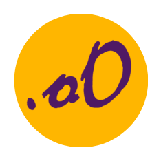

hasta.mktClique num tópico, escolha um comando, cole no chat. Nenhum jargão necessário.
/) seguida do comando, antes ou depois da sua pergunta, no chat da IA. Clique num comando abaixo para copiá-lo. As categorias 12–46 são efeitos visuais — exigem uma imagem anexada junto do comando. As categorias Claude e Gemini podem não funcionar fora da respectiva IA. Combine comandos, por exemplo /brainstorm + /concise. Na categoria Motions, clique em "Ver prompt" para abrir o template e em "Copiar prompt" para levar o texto já com a identidade Hasta embutida. O Guia de Instagram traz prompts e dicas de 8 posts, com filtro por tipo e por ferramenta/IA. Em Prompts Pro ficam mega-prompts prontos de fotografia e vídeo profissional (produto, retrato, VFX e anúncio em vídeo) — cole o texto inteiro como instrução inicial da conversa, antes de anexar suas imagens.